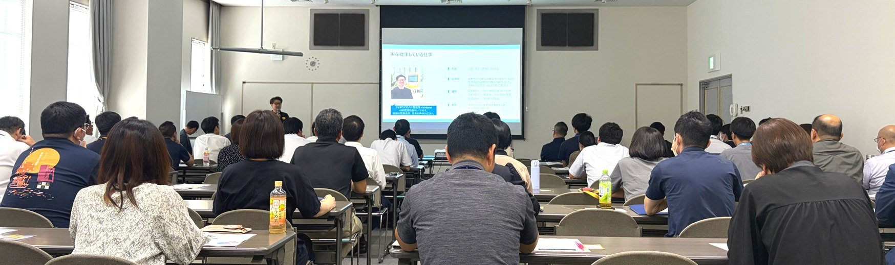
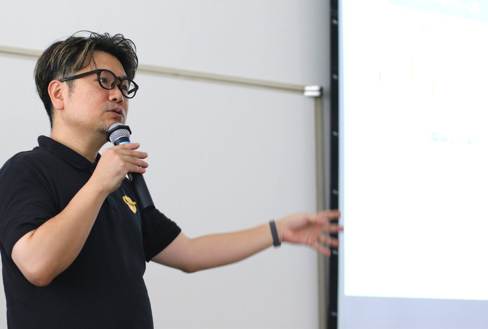
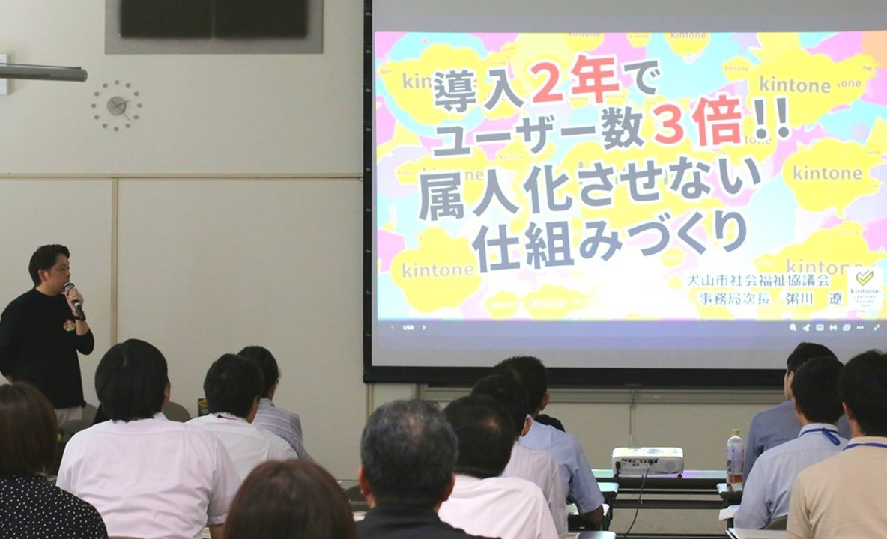
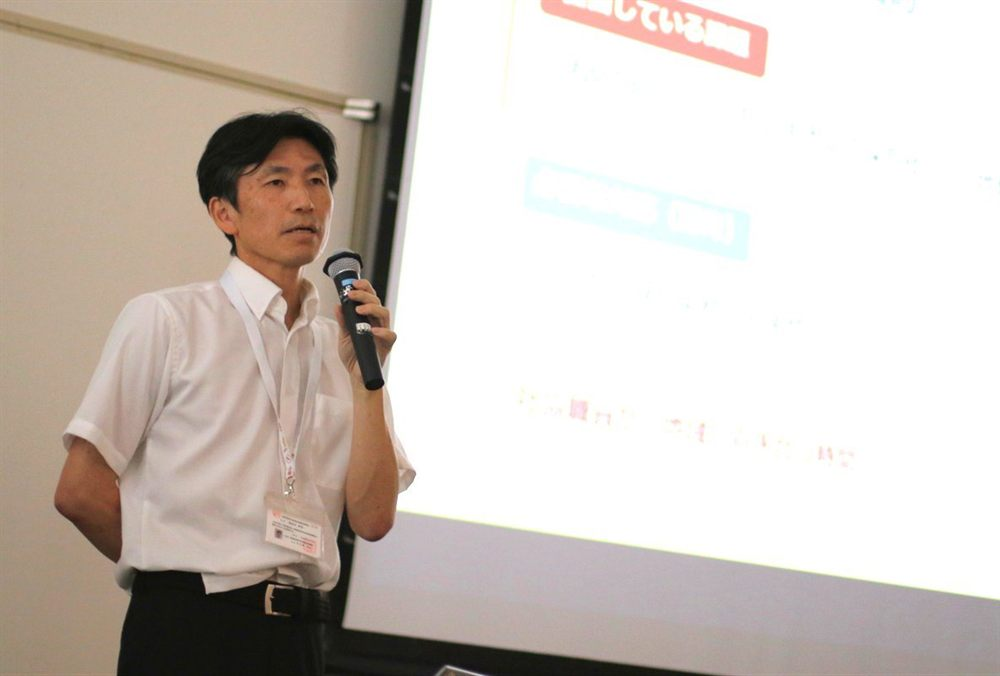
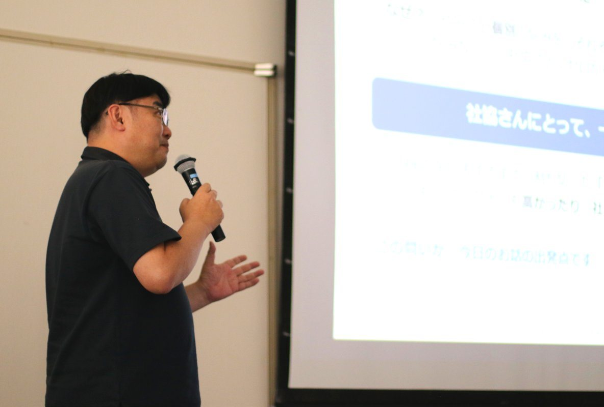
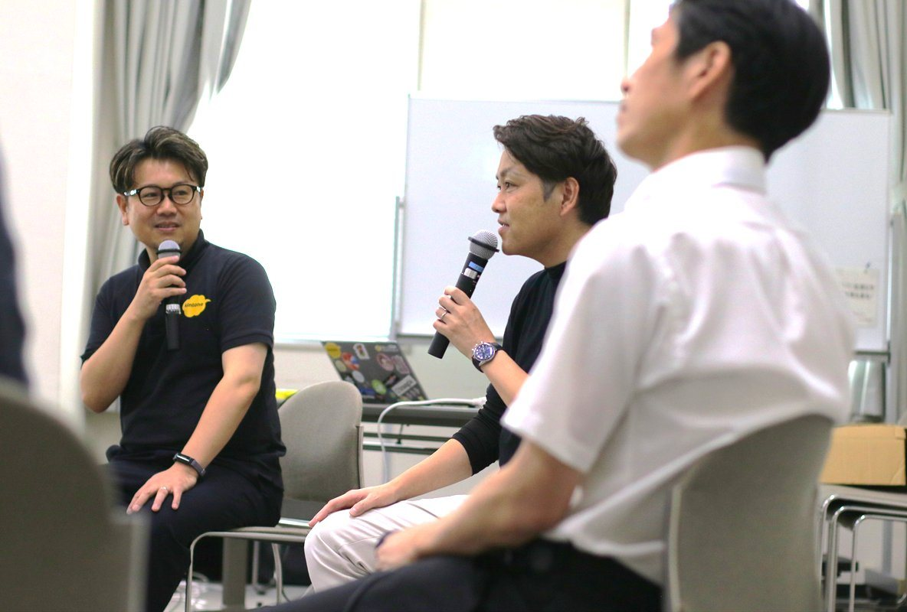

先進社協に学ぶ、通常業務をラクにするkintone超活用術セミナーを開催しました

社会福祉協議会および行政職員の皆さまを対象としたkintone超活用術セミナーを開催しました。
当日は60名以上の方にご参加いただき、
kintoneを用いた業務改善の基本から、導入2年でユーザー数を3倍に伸ばした組織づくりの秘訣、
さらに300以上のアプリを平時・有事でフル活用する実践例まで、濃いノウハウが共有されました。
当日のプログラム

講演1kintoneで実現できる業務改善
サイボウズ株式会社 リージョナル第1営業部 山田 英生 氏
kintoneの基本機能である「データベース」「ワークフロー」「コミュニケーション」の3つの要素を軸に、ドラッグ＆ドロップで誰でも簡単に業務アプリを作成できる仕組みを紹介しました。
また、外部Webサイトと連携させて市民からの直接入力を自動でkintoneに取り込む仕組みや、AI機能を活用した業務ノウハウの検索・メール回答作成支援についても解説しました。

講演2導入2年でユーザー数3倍！
属人化させない仕組みづくり
犬山市社会福祉協議会 事務局次長 粥川 遼 氏
異動1年目に直面した紙管理やExcelデータの山を解消するため、2年前にkintoneを導入しました。
現在ではパートを除く職員26名のうち21名がアカウントを持ち、26業務・68アプリを運用しています。
導入を成功に導いた要因として「トップダウン」「コアメンバー」「スモールスタート」の3つのキーワードを挙げ、業務の属人化を防ぐための具体的な組織設計について語りました。

講演3災害VCだけじゃない！
美濃加茂市社会福祉協議会の活用方法
美濃加茂市社会福祉協議会 地域福祉課長 長谷川 武司 氏
10年前、ボランティアのポイント管理とマッチング業務の属人化（年間6500件を紙とFAXで1名が担当）を解消するために導入を開始しました。
現在では300以上のアプリを開発し、日常生活自立支援、生活困窮者自立支援、福祉車両カレンダー、車検リマインダー、Googleマップ連携など、福祉・社協業務のほぼ全般でkintoneを活用しています。

講演4ええがねプラグインのご紹介
アントベアクリエイツ合同会社 森田 諭 氏
kintoneの標準機能では補いきれない「社協ならではの業務」へのアプローチ方法
（紙のまま／標準機能の徹底／プラグイン／個別カスタマイズ開発の4分類）を整理。
その上で、現場で重宝する独自の便利プラグイン（ええがねシリーズ）を紹介しました。

パネルディスカッション担当者任せにしない！社協職員自らが「使いこなす」ための仕組みづくりと導入支援企業との連携
登壇社協職員 ／ サイボウズ ／ 株式会社興栄コンサルタント
kintoneを組織全体へ定着させるための「抵抗勢力やハードルをどう乗り越えるか」「AIなどの最新テクノロジーをどう社協業務に活かすか」をテーマに、先進事例を持つ2人の社協職員とサイボウズ、興栄コンサルタントが実体験を交えて討論を行いました。
詳しく見る